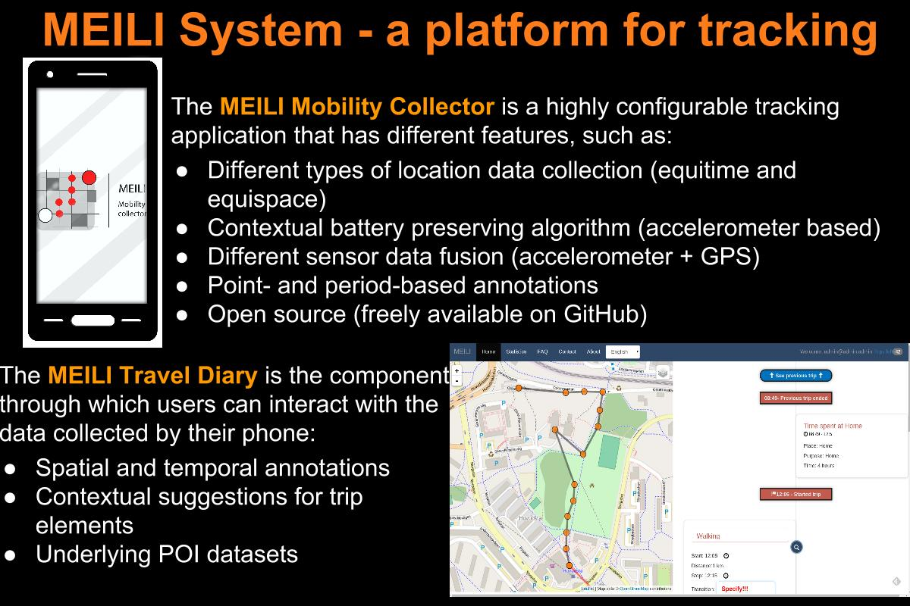
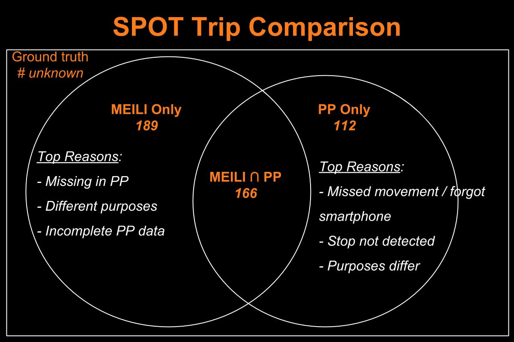
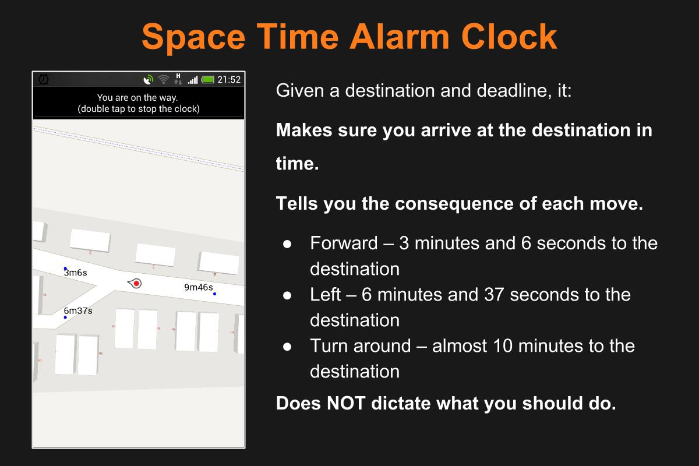
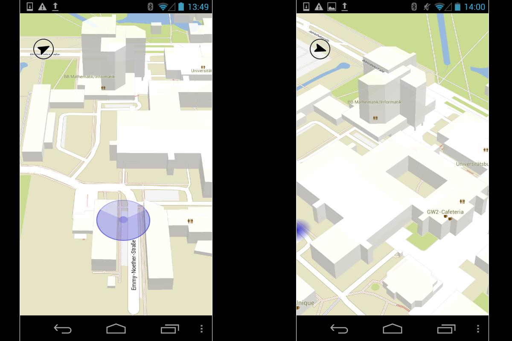

-

-

KTH Royal Institute of Technology, Stockholm, Sweden
Latest updates
- Slides for "Strategies for the seamless deployment of travel diary collection systems to new regions" presented at Network on European Communications and Transport Activities Research (NECTAR) 2017 meeting are available here
- Slides for "Detecting and visualizing the stability of activity chains with longest common purpose subsequences" presented at the 2017 Association of American Geographers are available here
- Slides for "MEILI Workshop: collecting travel diaries" presented at the Institute of Transport Economics, Oslo, Norway are available here
- Slides for "Assuring spatial and temporal data integrity via constraints and triggers in PostgreSQL" presented at the Stockholm PostgreSQL User Group Meetup are available here
About Me
I have started a new venture in the industry world: Airmee, a company specialized in large scale logistic solutions. I am the CTO of Airmee and lead the company's research, development and innovation efforts.
I am also the owner of Badger AB, the company that owns the Intellectual Property Rights on the MEILI family and leads the open source development efforts of MEILI.
In parallel, I am also doing a PhD student at KTH, where I mostly focus on understanding how people make decisions when they travel. My approaches are data-driven and rely on different artificial intelligence algorithms to attach / extract travel semantics to / from trajectories and auxiliary datasets.
Experience with real-world data, however, soon convinces one that both stationarity and Gaussianity are fairy tales invented for the amusement of undergraduates.
Overall Activity
Selected Projects
My work spans both the study of theoretical concepts as well as applications of those concepts, which led to projects as diverse as system design, machine learning, data quality analysis, data storage and data indexing, or location tracking.
MEILI Travel Diary
The MEILI Travel Diary is an open-source highly modular system for the collection and annotation of travel diaries of multiple users.The system contains two main components: the Mobility Collector, which was presented at the Mobile Ghent 2013 conference, and the Web Diary, which will be presented at the the Mobile Tartu 2016 conference.
SPOT
SPOT studies if an application installed on a smartphone equipped with GPS can be used to replacement or supplement a traditional travel diary. The advantages and disadvantages of traditional travel diaries as well as the new method are discussed compared. The methods are implemented in the same city, at the same time and with the same respondents using both methods to facilitate the comparison.
A Space Time Alarm Clock
Space Time Alarm Clock (STAC) is an Android application designed to help you get to a destination in time with minimal interaction. It does so by continuously 1) identifying possible moves from your current location, 2) showing, for each move, how long it will take to reach the destination if it is taken, and 3) alerting when no move will lead you to the destination in time.
Open Science Map
OpenScienceMap provides free and open maps for Android with the fastest and 100% pure vector maps around. It is a platform used to enable researchers to implement their ideas, to cooperate with others, and to share their results with everybody.
Want to know more about my projects?
If you want to see a full list of the projects I am involved with, together with a short description for each, please go here.

My Interests
I am interested in several research fields. Out of these, I particularly want to mention: Logistics, Intelligent Transportation Systems, Databases, Location Based Services, Spatio-Temporal Awareness, GIS and Contextualization.
Want to get technical?
If you need more info on me, you can download my CV from here. Also, please don't hesitate to contact me for further information.
Publications
Want to see all my publications?
If you want to see a full list of my publications and reports, including my ongoing research projects, please go here.


{kind=link}
{kind=link}
{kind=link}
{kind=link}
{kind=link}